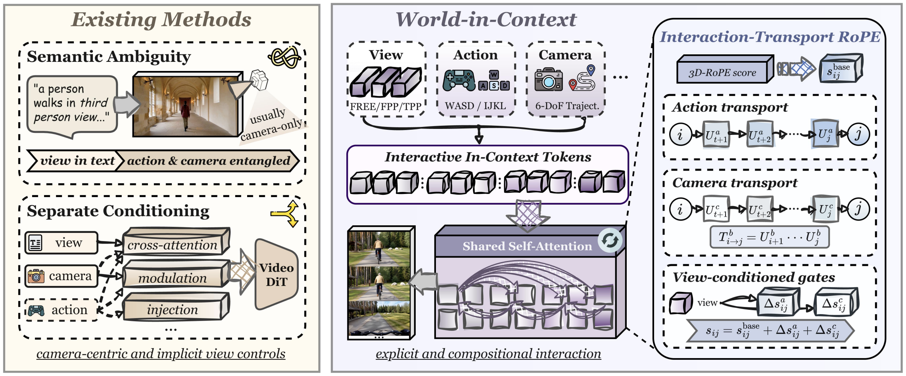

01 / OVERVIEW
View, action, and camera.
One shared context.
World-in-Context is a training framework centered on In-Context Conditioning (ICC), bringing view, action, and camera controls into a shared attention space.
- Three perspectives
- Free-camera · First-person · Third-person
- Joint control
- Action inputs and/or camera trajectories
- Dynamic switching
- Change perspectives within a video

5B
Wan2.2 backbone
81.5
WBench navigation
93.8
Perspective switchingWith perspective-switching fine-tuning.
02 / GENERATED WORLDS
A world of possibilities.
Every window opens onto another world. Use the arrows to explore.
03 / CHANGING PERSPECTIVES
Change the view. Stay in the world.
04 / APPLICATIONS
More ways to interact.
WiC-Causal
Historical context supports coherent, long-horizon causal rollouts.
WiC-Game
Fire, crouch, and walk across game maps and realistic environments.
05 / CITATION
Core Contributors
- Harold Haodong Chen*
- Rui Peng
- Rongjin Guo
- Lingteng Qiu
- Kejie Qiu
- Chao Xu
- Zilong Dong
* Work done during Harold H. Chen's internship at Alibaba Token Hub (ATH), Alibaba Group.
Citation
@article{chen2026world,
title={World-in-Context: In-Context Conditioning for Interactive Video World Models},
author={Chen, Harold Haodong and Peng, Rui and Guo, Rongjin and Qiu, Lingteng and Qiu, Kejie and Xu, Chao and Dong, Zilong},
journal={arXiv preprint arXiv:TBD},
year={2026}
}